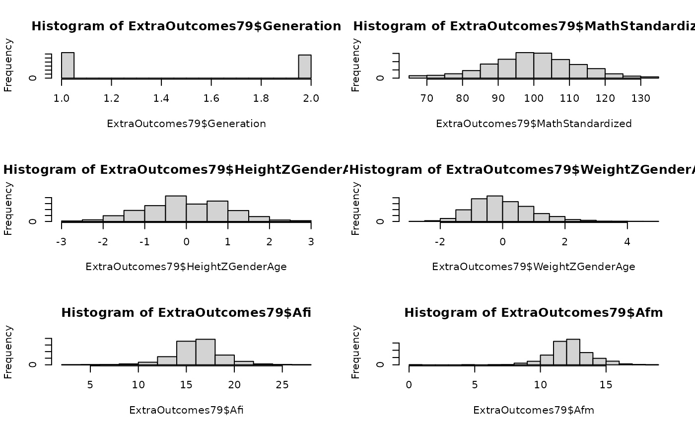

This dataset is provided primarily to facilitate documentation examples.
A data frame with 11,495 observations on the following 6 variables. There is one row per subject.
SubjectTag The ID value assigned by NLS to the first subject. For Gen1 Subjects, this is their "CaseID" (ie, R00001.00). For Gen2 subjects, this is their "CID" (ie, C00001.00).
SubjectID The ID value assigned by NLS to the first subject. For Gen1 Subjects, this is their "CaseID" (ie, R00001.00). For Gen2 subjects, this is their "CID" (ie, C00001.00).
Generation The generation of the subject. Values are either 1 or 2, representing Gen1 and Gen2. Note that this variable is not a factor (in contrast with data frames like
Links79Pair). This dataset is supposed to mimic the dataset provided by the researcher, which typically will not have been converted to a factor.
HeightZGenderAge The subject's height, standardized by gender and age (see Details).
WeightZGenderAge The subject's weight, standardized by gender and age (see Details).
AfqtRescaled2006Gaussified Armed Forces Qualification Test Score (Gen1 only; see Details).
Afi Self-reported age of first intercourse (Gen1 only; see Details).
Afm Self-reported age of first menstruation (Gen1 only; see Details).
MathStandardized Standardized PIAT Math scores (Gen2 only; see Details).
Gen1 information comes from the Summer 2013 release of the NLSY79 sample. Gen2 information comes from the Summer 2013 release of the NLSY79 Children and Young Adults sample. Data were extracted with the NLS Investigator (https://www.nlsinfo.org/investigator/).
The SubjectTag variable uniquely identify subjects. For Gen2
subjects, the SubjectTag is identical to their CID (ie, C00001.00 -the
SubjectID assigned in the NLSY79-Children files). However for Gen1
subjects, the SubjectTag is their CaseID (ie, R00001.00), with "00"
appended. This manipulation is necessary to identify subjects uniquely in
inter-generational datasets. A Gen1 subject with an ID of 43 has a
SubjectTag of 4300. The SubjectTags of her four children remain
4301, 4302, 4303, and 4304.
For Gen2, an NLSY79 variable of MathStandardized is C05801.00.
Afi and Afm, values were simplified
(to one value per subject) by Kelly Williams in Sept 2010.
The variables for height and weight were manipulated in R files available in a repository available to the public. Find the appropriate subfolder, and view the HTML report for more details.
Download CSV If you're using the NlsyLinks package in R, the dataset is automatically available. However to use the kinship information in a different environment, download the csv, which is readable by all statistical software. links-metadata-2017-79.yml documents the dataset version information.
library(NlsyLinks) # Load the package into the current R session.
gen2Outcomes <- subset(ExtraOutcomes79, Generation == 2) # Create a dataset of only Gen2 subjects.
# plot(ExtraOutcomes79) #Uncomment to see a large scatterplot matrix.
summary(ExtraOutcomes79)
#> SubjectTag SubjectID Generation HeightZGenderAge
#> Min. : 100 Min. : 1 Min. :1.000 Min. :-2.9855
#> 1st Qu.: 314025 1st Qu.: 5998 1st Qu.:1.000 1st Qu.:-0.7238
#> Median : 620050 Median : 12000 Median :1.000 Median :-0.0448
#> Mean : 618600 Mean : 289254 Mean :1.476 Mean :-0.0057
#> 3rd Qu.: 914501 3rd Qu.: 577403 3rd Qu.:2.000 3rd Qu.: 0.6484
#> Max. :1268600 Max. :1267501 Max. :2.000 Max. : 2.9965
#> NA's :4711
#> WeightZGenderAge AfqtRescaled2006Gaussified Afi Afm
#> Min. :-2.9855 Min. :-2.8947 Min. : 2.00 Min. : 0.00
#> 1st Qu.:-0.6773 1st Qu.:-0.6919 1st Qu.:15.00 1st Qu.:12.00
#> Median :-0.1490 Median :-0.0235 Median :17.00 Median :13.00
#> Mean : 0.0005 Mean :-0.0106 Mean :16.66 Mean :12.78
#> 3rd Qu.: 0.5331 3rd Qu.: 0.6600 3rd Qu.:18.00 3rd Qu.:14.00
#> Max. : 4.9448 Max. : 2.9945 Max. :27.00 Max. :19.00
#> NA's :4719 NA's :12510 NA's :12740 NA's :18165
#> MathStandardized
#> Min. : 65.0
#> 1st Qu.: 92.5
#> Median :100.0
#> Mean :100.1
#> 3rd Qu.:108.5
#> Max. :135.0
#> NA's :15085
oldPar <- par(mfrow = c(3, 2))
hist(ExtraOutcomes79$Generation)
hist(ExtraOutcomes79$MathStandardized)
hist(ExtraOutcomes79$HeightZGenderAge)
hist(ExtraOutcomes79$WeightZGenderAge)
hist(ExtraOutcomes79$Afi)
hist(ExtraOutcomes79$Afm)

par(oldPar)